china
China es una nación muy poblada de Asia Oriental cuyos vastos paisajes abarcan praderas, desiertos, montañas, lagos, ríos y más de 14,000 km de costa. La capital, Pekín, mezcla la arquitectura moderna con los sitios históricos como el complejo del palacio de la Ciudad Prohibida y la plaza de Tiananmén. Shanghái es un centro financiero global adornado con rascacielos. La icónica Gran Muralla China recorre el norte del país de este a oeste.
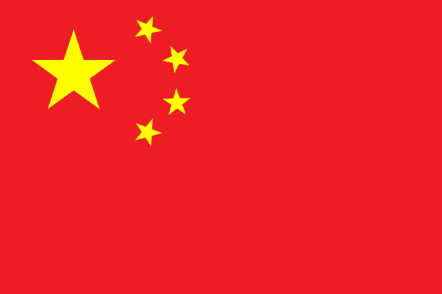
corea
Corea es una región de Asia Oriental. En la historia moderna, hace referencia a Corea del Sur y a Corea del Norte. En la historia moderna y contemporánea, se aplicó al Imperio coreano establecido por Gojong en 1897.
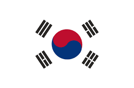
indonesia
Indonesia, un país del Sudeste Asiático compuesto de miles de islas volcánicas, es hogar de cientos de grupos étnicos que hablan varios idiomas distintos. Es conocido por sus playas, volcanes, dragones de Komodo y selvas que albergan elefantes, orangutanes y tigres. En la isla de Java, se encuentran la vibrante y creciente capital de Indonesia, Yakarta, y la ciudad de Yogyakarta, conocida por la música de gamelán y su arte tradicional de las
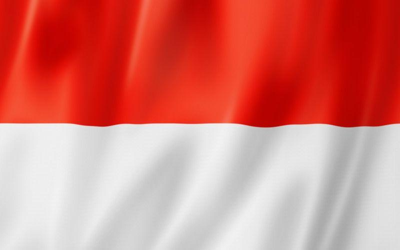
india
La India es un vasto país de Asia del Sur con un terreno diverso que abarca desde las cumbres del Himalaya hasta la costa del océano Índico. Tiene una historia de más de 5 milenios. En el norte, los monumentos históricos del imperio Mogol incluyen el complejo del Fuerte Rojo de Delhi y la enorme mezquita de Jama Masjid, junto con el icónico mausoleo del Taj Mahal en Agra.
japon
Japón es una nación insular del océano Pacífico con densas ciudades, palacios imperiales, parques nacionales montañosos y miles de santuarios y templos. El tren bala Shinkansen conecta las islas principales de Kyushu (con las playas subtropicales de Okinawa), Honshu (con Tokio y el memorial del bombardeo atómico en Hiroshima) y Hokkaido (famosa por el esquí). Tokio, la capital, es famosa por sus rascacielos, el comercio y la cultura pop.
Africa
sudafrica
Sudáfrica es un país del extremo más meridional del continente africano que se caracteriza por sus numerosos ecosistemas distintos. En el interior, el Parque Nacional Kruger es un destino para el safari, poblado de caza mayor. La Provincia Occidental del Cabo tiene playas, abundantes viñedos en torno a Stellenbosch y Paarl, acantilados escarpados en el Cabo de Buena Esperanza, bosques y lagunas a lo largo de la Ruta Jardín, y Ciudad del Cabo, bajo la Montaña de la Mesa y su cumbre plana.
kenia
Kenia es un país de África Oriental con una costa en el océano Índico. Su territorio abarca sabana, terrenos en lagos, el espectacular Gran Valle del Rift y zonas montañosas altas. También alberga fauna, como leones, elefantes y rinocerontes. Se realizan safaris desde Nairobi, la capital, a la Reserva Masái Mara, conocida por sus migraciones anuales de ñus, y el Parque Nacional Amboseli, que ofrece vistas del monte Kilimanjaro en Tanzania, de 5,895 m de altura
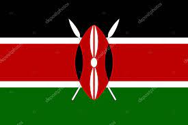
nigeria
Nigeria, oficialmente República Federal de Nigeria, es un país de África occidental, que limita con Níger al norte, con Chad en el nordeste, con Camerún en el este y con Benín en el oeste. Su costa sur está localizada en el Golfo de Guinea en el Océano Atlántic
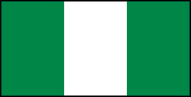
marruecos
Marruecos es un país de África del Norte que limita con el océano Atlántico y el mar Mediterráneo, y se distingue por las influencias culturales bereberes, árabes y europeas. La medina de Marrakech es un barrio medieval similar a un laberinto con entretenimiento en su plaza de Yamaa el Fna y los zocos (mercados) que venden cerámicas, joyas y lámparas de metal. La Alcazaba de los Udayas en la capital, Rabat, es un fuerte real del siglo XII con vista al mar. ― Google
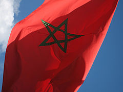
sudan
Sudán, oficialmente República de Sudán, es uno de los cincuenta y cuatro países que forman el continente africano. Su capital es Jartum y la ciudad más poblada es Omdurmán
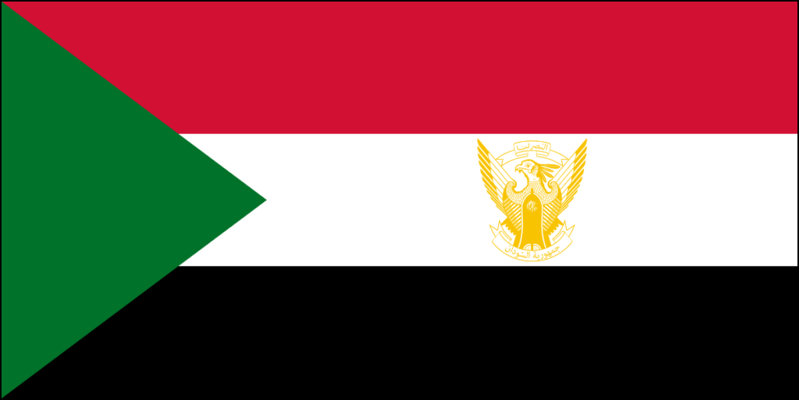
Oceania
australia
Australia es un país rodeado por los océanos Índico y Pacífico. Sus ciudades principales (Sídney, Brisbane, Melbourne, Perth y Adelaida) son costeras. Su capital, Canberra, se encuentra en el interior. El país es conocido por la Casa de la Ópera de Sídney, la Gran Barrera de Coral, una vasta área natural desértica conocida como Outback y especies animales únicas, como el canguro y el ornitorrinco.
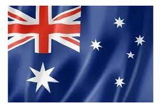
fiyi
Fiyi, un país del Pacífico Sur, es un archipiélago de más de 300 islas. Es famoso por sus paisajes escabrosos, las playas bordeadas de palmeras y los arrecifes de coral con lagunas de aguas cristalinas. Sus islas más importantes, Viti Levu y Vanua Levu, albergan la mayor parte de la población. En Viti Levu, se encuentra la capital, Suva, una ciudad puerto con arquitectura colonial británica. El Museo de Fiyi, en los Jardines Thurston de la época victoriana, tiene exhibiciones etnográficas
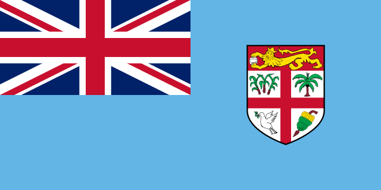
papua nueva
Papúa Nueva Guinea, en la región suroeste del Pacífico, abarca la mitad oriental de Nueva Guinea y sus islas. El país tiene una inmensa diversidad cultural y biológica y es famoso por sus playas y sus arrecifes de coral. En el interior, tiene volcanes activos, el monte de granito Wilhelm, densos bosques pluviales y rutas de excursionismo, como el sendero de Kokoda. También hay aldeas tribales tradicionales, muchas de ellas con sus propios dialectos.
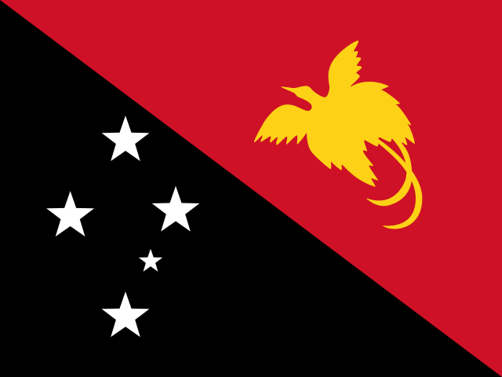
islas salomon
Las Islas Salomón son un país insular independiente situado en Oceanía, en la Melanesia tradicional. Forma parte de la Mancomunidad de Naciones
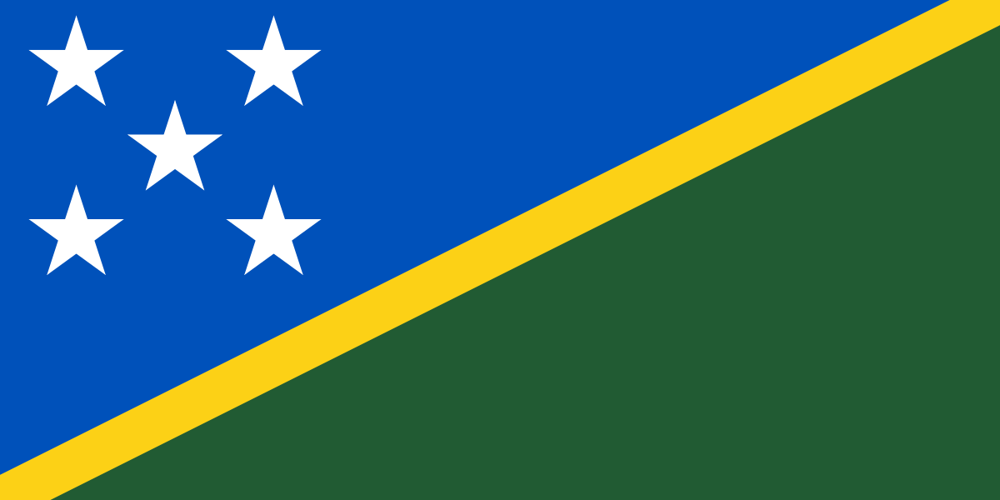
paloas
Palaos es un archipiélago de más de 500 islas, forma parte de la región de Micronesia en el océano Pacífico occidental. En la isla de Koror, se encuentra la antigua capital, también llamada Koror, que además es el centro comercial de las islas. La isla Babeldaob es más grande y en ella se encuentra la capital actual, Ngerulmud, junto con montañas y playas de arena en la costa este. En el norte, se encuentran los antiguos monolitos de basalto conocidos como Badrulchau, en campos de hierba rodeados de palmeras
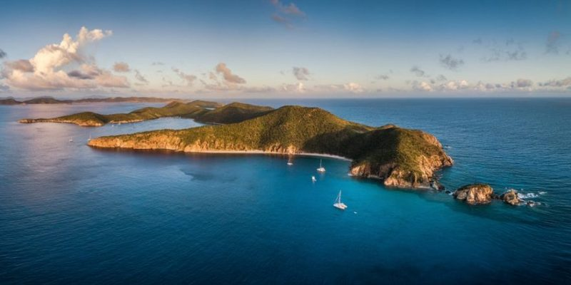
Cristobal Colon
cuba
Cuba, oficialmente República de Cuba, es un país soberano insular, asentado en las Antillas del mar Caribe. El territorio está organizado en quince provincias y un municipio especial con La Habana como capital y ciudad más poblada.
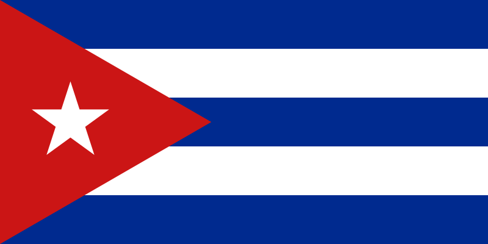
costa rica
Costa Rica es un país de América Central con una geografía accidentada, que incluye bosques tropicales y costas en el Caribe y el Pacífico. Aunque su capital, San José, es hogar de instituciones culturales, como el Museo del Oro Precolombino, Costa Rica es conocida por sus playas, sus volcanes y su biodiversidad. Aproximadamente un cuarto de su área corresponde a selvas protegidas, repletas de fauna, como el mono araña y los quetzales.
honduras
Honduras es un país de América Central con costas en el mar Caribe al norte y en el océano Pacífico al sur. En el bosque tropical cerca de Guatemala, el antiguo sitio ceremonial maya de Copán tiene jeroglíficos tallados en piedra y estelas, altos monumentos de piedra. En el mar Caribe, se encuentran las Islas de la Bahía, un destino para el buceo que forma parte de la Barrera de Coral Mesoamericana.
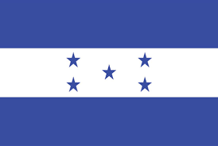
jamaica
Jamaica, un país insular caribeño, tiene una frondosa topografía de montañas, bosques pluviales y playas con arrecifes. Muchos de sus complejos hoteleros servicio de todo incluido (all-inclusive) se agrupan en Bahía Montego, de arquitectura colonial británica, y Negril, conocida por sus sitios de buceo y esnórquel. Jamaica es famosa por ser la cuna del reggae, y su capital Kingston alberga el Museo Bob Marley, dedicado al famoso cantante
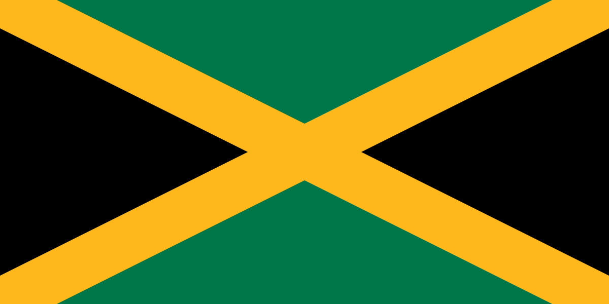
puerto rico
Puerto Rico es una isla del Caribe y un territorio no incorporado de Estados Unidos con un paisaje de montañas, cascadas y el bosque tropical El Yunque. En San Juan, la capital y ciudad más grande, el área de Isla Verde es famosa por su franja de hoteles, bares en la playa y casinos. El barrio de Viejo San Juan tiene edificios coloridos de estilo colonial español y las enormes fortalezas de El Morro y La Fortaleza, ambas construidas hace siglos.
boton
borrar
enviar